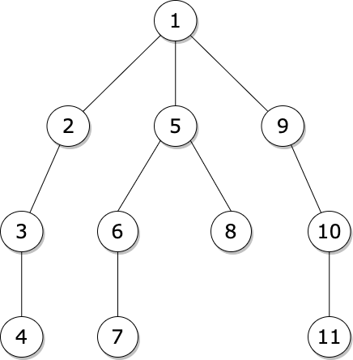
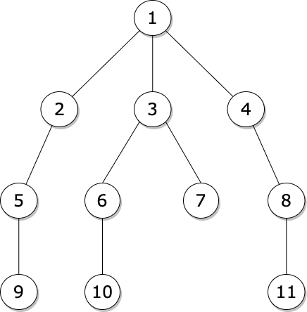

Depth-first search (DFS) is an algorithm for traversing a tree. It starts traversing from the root node and explores as far as possible along each branch before backtracking. Usually uses stack to find the shortest path. In geeral, DFS is faster than BFS. Time complexity: O(V+E)

Breadth-first search (BFS) is an algorithm for searching a tree. It starts traversing from the root node and explores all nodes at the present depth prior to moving on to the nodes at the next depth level. Extra memory, usually a queue, is needed to keep track of the child nodes that were encountered but not yet explored. It is usually a better option when target is closer to source. Time complexity: O(V+E)